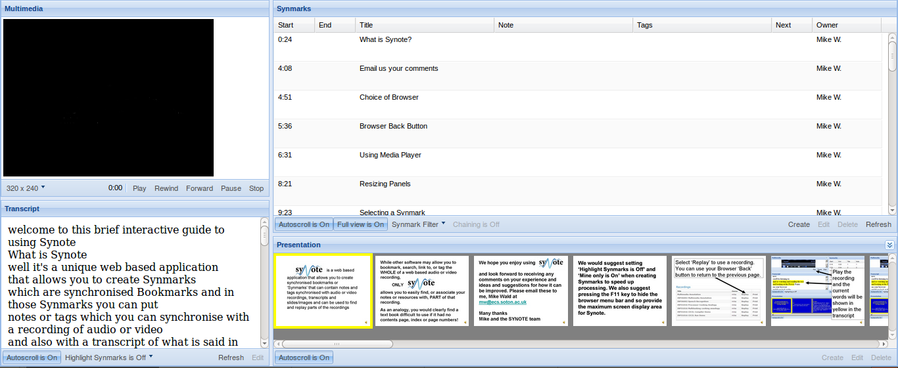

Videogular Questions
Created by GDP Group 12.
What is our project?
We are creating software that aims to:
Make, view and analyse quizzes and polls in videos
Be accessible
Be a research tool for education styles
Be easily integrated into the new version of Synote
Synote

Why?
TODO
What we've done so far
Architecture
Written as a plugin to Videogular, and AngularJS library
Designed for easy integration
Quiz logic is in JavaScript
WebWorker directs actions
AngularJS displays questions
Demo
Here
What next
Analytics
Quiz responses
Viewer rentention
Authoring Tool
Summary
Progress so far
Future plans
Questions?